UpSKILL / ReSKILL
การพัฒนาเฟิร์มแวร์สำหรับระบบสื่อสาร CAN bus ในยานยนต์
June 23, 2569
Course objective
-
- ฮาร์ดแวร์ของการอบรม: บอร์ด NUCLEO-C562RE
- ชุดเครื่องมือพัฒนา: STM32CubeIDE for VS Code
- กระบวนการและเทคนิคการพัฒนาเฟิร์มแวร์
- workshop: เฟิร์มแวร์ ADC -> USB
-
- workshop: เฟิร์มแวร์ CAN -> USB
-
- Invited talk (NETH/TDET)
- workshop: เฟิร์มแวร์ CAN protocol
Development tools
01 Hardware
- NUCLEO-C562RE board
- STM32C562RET6 microcontroller
- MCP2562FD CAN transceiver
1. STM32 microcontroller
- ARM Cortex-M + memory (Flash/SRAM) + on-chip peripherals
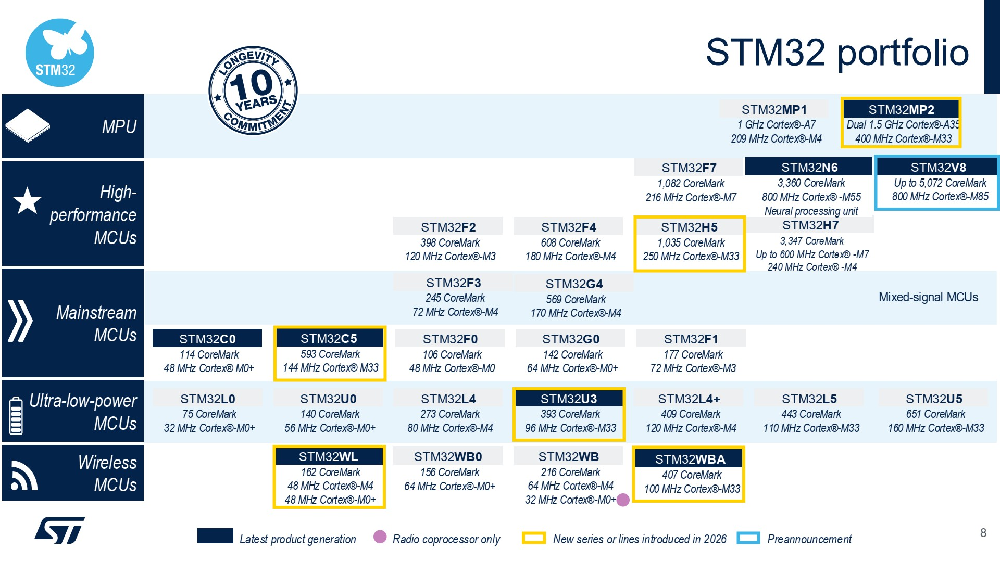
1. STM32C5 MCU family
- ARM Cortex-M33 + FPU + DSP (ไม่มี TrustZone) ที่ 144 MHz สำหรับงานทั่วไป เน้นราคาถูก
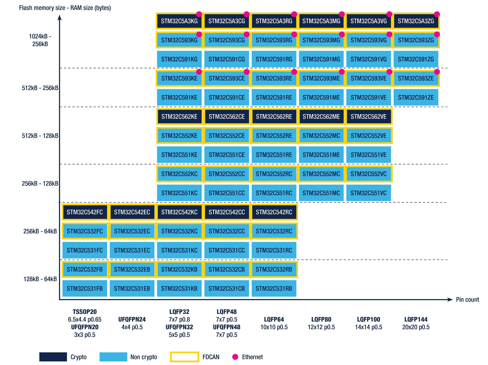
1. NUCLEO-C562RE board
- ไมโครคอนโทรลเลอร์ STM32C562RET6: LQFP 64
- หัวต่อ Arduino UNO + Morpho (CN7, CN10)
- CN9: D0-D7 pins
- CN5: D8-D15 pins
- CN8: A0-A5 pins
- CN6: power/GND pins
- หัวต่อ ST-Link:
- Serial Wire Debug (SWD)
- Virtual COM port (VCP)
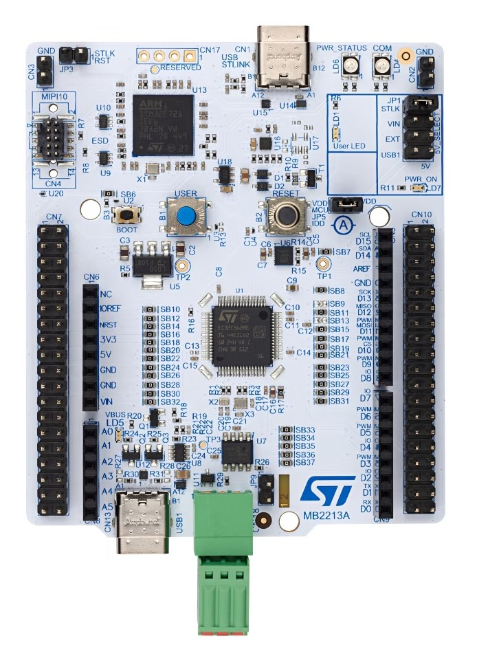
1. NUCLEO-C562RE schematics
- ภาพรวม = องค์ประกอบของบอร์ด
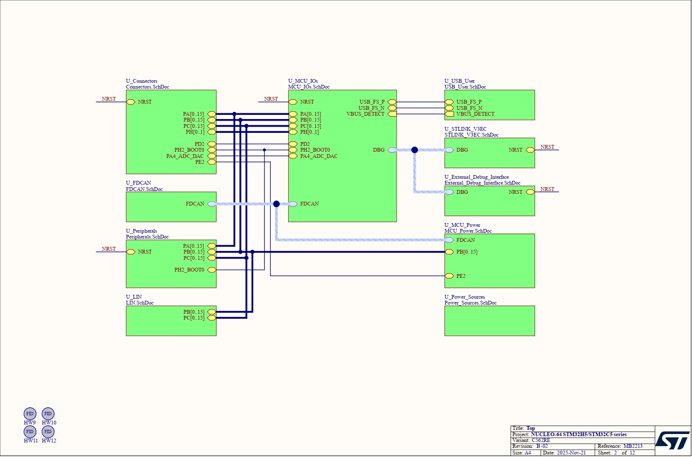
1. NUCLEO-C562RE schematics
- การเชื่อมต่อ = หัวต่อ Arduino และ Morpho
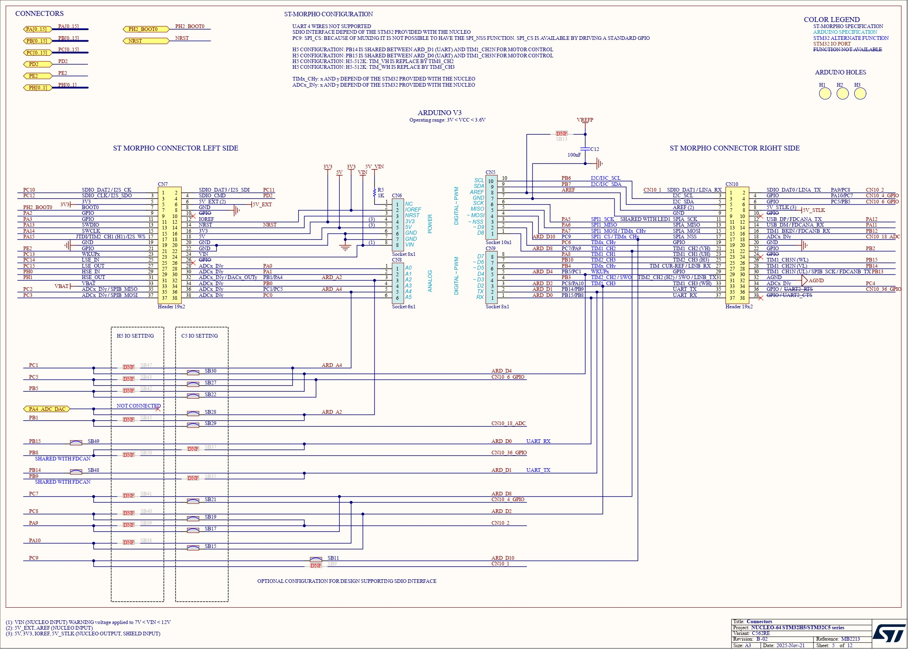
1. NUCLEO-C562RE schematics
- ส่วน ST-Link = พอร์ท SWD และพอร์ทอนุกรม UART
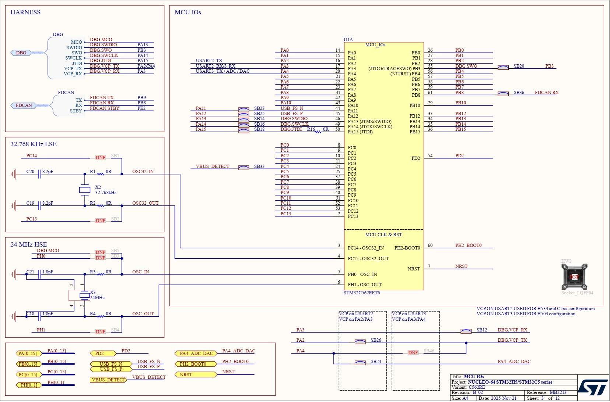
1. NUCLEO-C562RE schematics
- การเชื่อมโยงอุปกรณ์ = ขาสัญญาณ / pull-up/pull-down / active LOW/HIGH / …
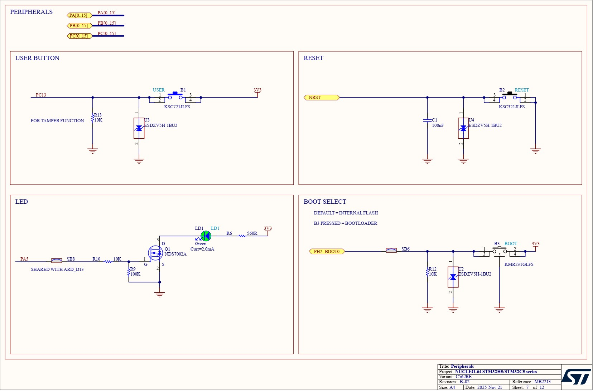
1. STM32C562RE microcontroller
- STM32C562RE: ARM Cortex-M33 + 512KB Flash + 64KB/64KB SRAM + LPDMA1/2
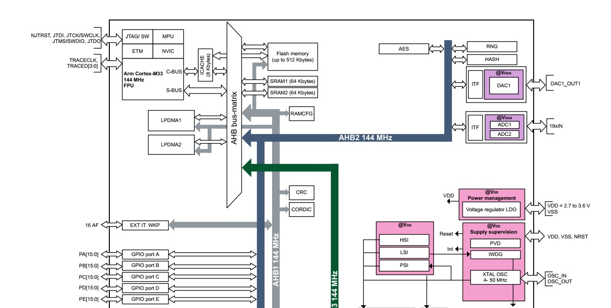
1. STM32C562RE microcontroller
- STM32C562RE: RCC + AHB/APB bridge + UART/SPI/I2C + Timer + ADC + …
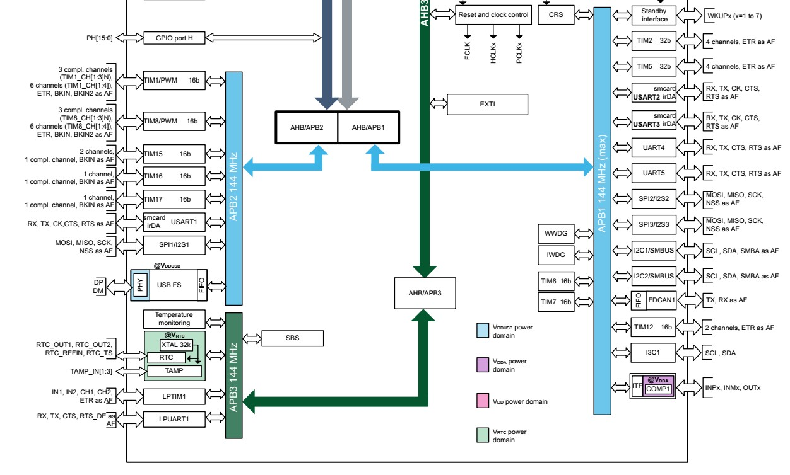
1. STM32C562RET6 microcontroller
- ชิปแบบ LQFP64 มีขา GPIO 52 ขา (ขาแอนะล็อก 17 ขา)
- Timer x 12, SPI x 3, I2C x 2, UART x 6, FDCAN x1, RTC, USB
- 12-bit ADC, 12-bit DAC
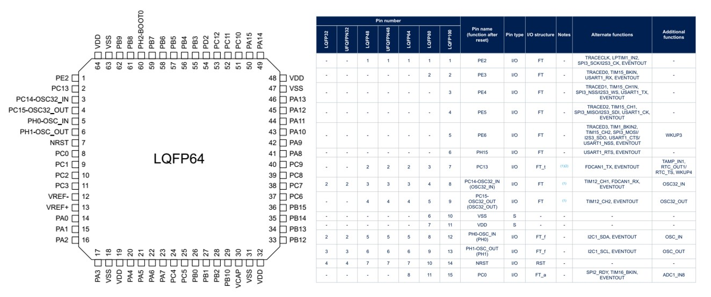
1. NUCLEO-C562RE schematics
- MCP2562FD: CAN-FD transceiver
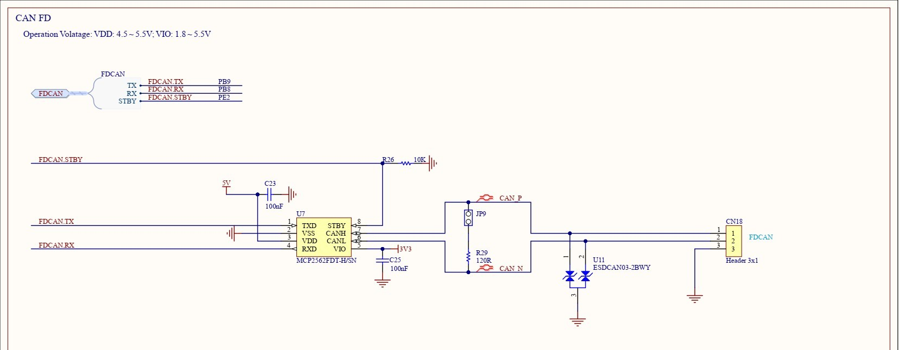
1. MCP2562FD
- CAN FD Transceiver รองรับ 8 MBits/sec
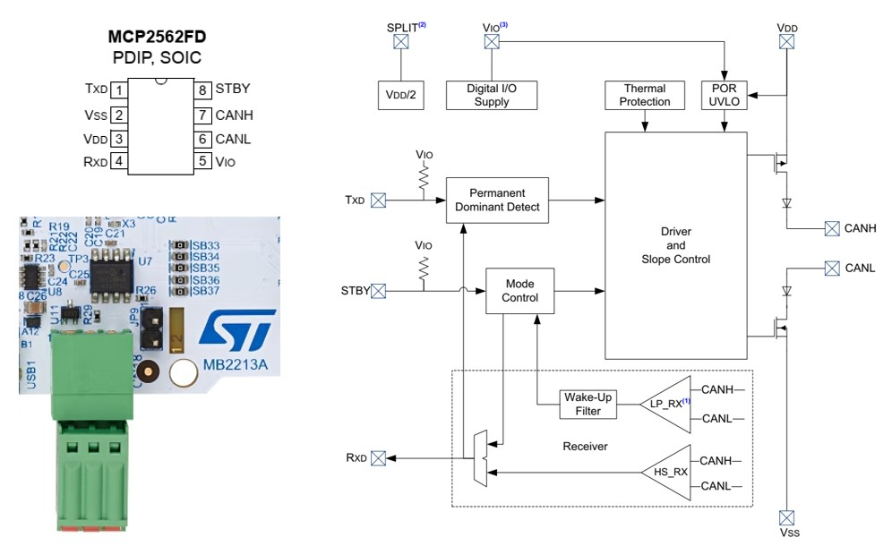
1. Push-in connection terminal block
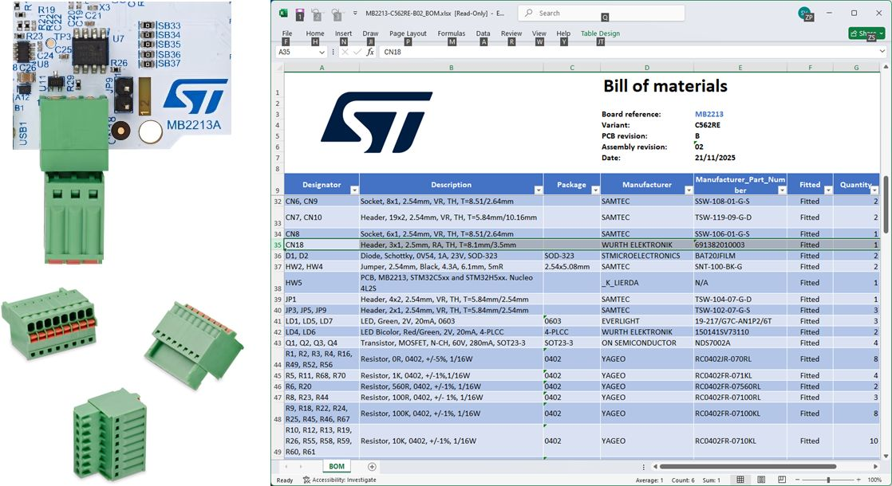
1. Hardware for workshop
| ฮาร์ดแวร์ | ขาสัญญาณ | การทำงาน |
|---|---|---|
| LED | PA5 | digital output แบบ active HIGH |
| USR button | PC13 | digital input แบบ no-pull |
| UART | PA2 (USART2.TX) PA3 (USART2.RX) |
พอร์ทสื่อสารผ่าน ST-Link |
| Analog IN | PA0 (ADC_IN0) / PA1 (ADC_IN1) / PA4 (ADC_IN2) / PB0 (ADC_IN3) / PC5 (ADC_IN4) / PC0 (ADC_IN5) |
ขา A0-A5 ของหัวต่อ Arduino ขา A2 ทำงานเป็น DAC ได้ |
| CAN FD | PB9 (FDCAN.TX) PB8 (FDCAN.RX) PE2 (FDCAN.STBY) |
พอร์ตสื่อสารแบบ CAN FD |
| JP9 | CANH-CANL | jumper สำหรับเลือกต่อ 120 Ω |
02 Development workflow
- Development process
- Development tools
2. Software Development Life Cycle
Artifacts: concept → requirement → architecture → detailed design → code → test report
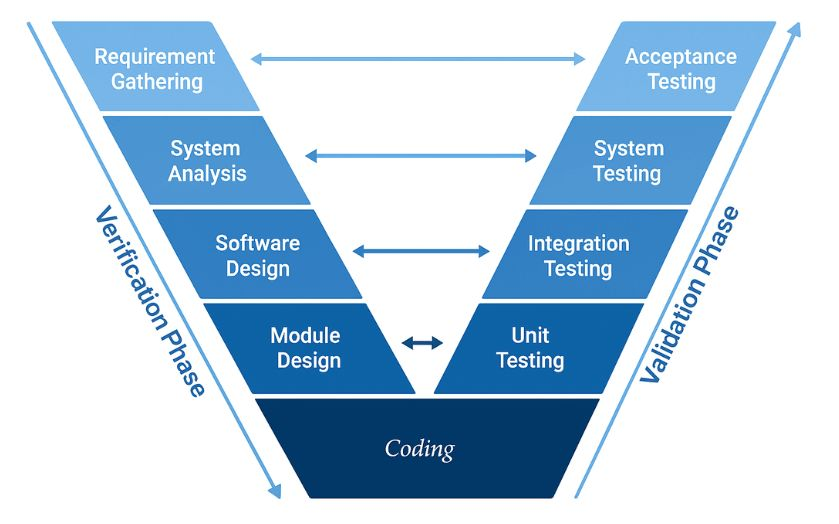
2. Firmware development
Step 1: code → build
- ศึกษาบอร์ด/MCU/ชิป → การเชื่อมต่อและสั่งการ
- เลือกวิธีพัฒนา → framework / API
- เตรียมชุดเครื่องมือพัฒนา
- requirement → analysis → design = ฟังก์ชัน
- เขียนโค้ด
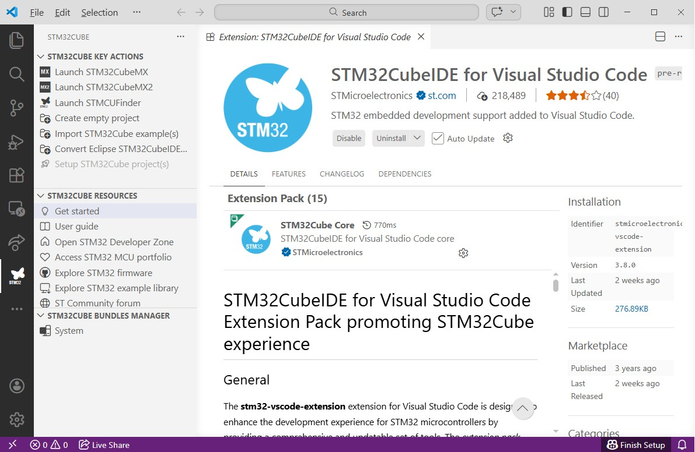
Step 2: flash → run
- เตรียม on-chip debugger และเครื่องมือวัด
- build เฟิร์มแวร์
- เชื่อมต่อบอร์ดและเครื่องมือ
- เตรียมและ flash เฟิร์มแวร์
- ทดลอง run โค้ด
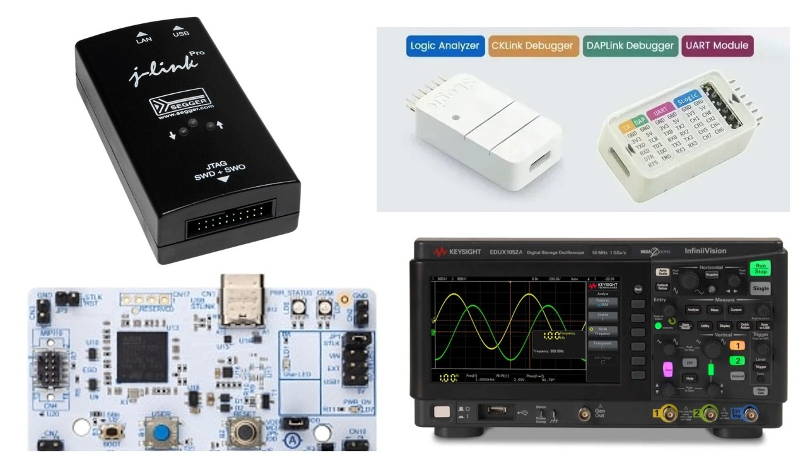
Step 3: test → debug
- วางแผน test → input / expect
- เตรียมโค้ดสำหรับ test
- ดีบั๊กโค้ด: breakpoint / watch / step / continue
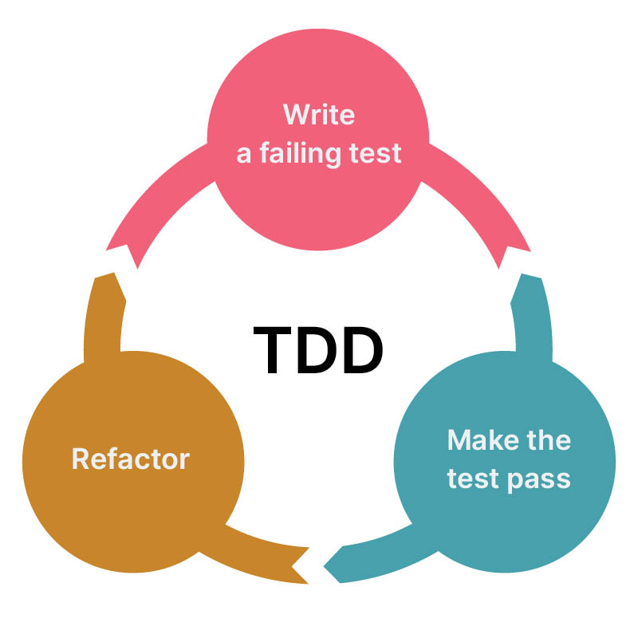
2. STM32 development toolchain
PlatformIO: ST STM32
- Extension ของ VS Code
- หลายสถาปัตยกรรม + หลาย framework
- Arduino framework
- STM32Cube framework
- STM32Cube HAL
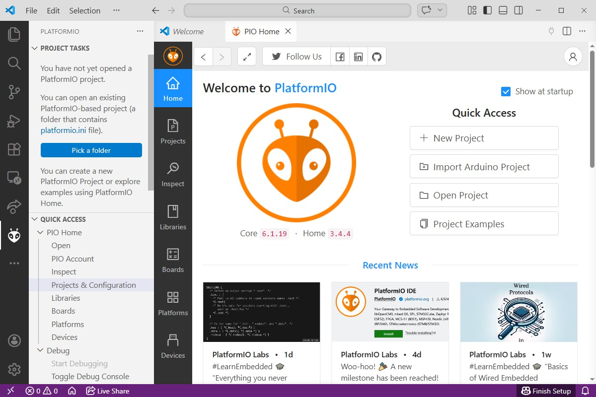
STM32CubeIDE
- พัฒนาบน Eclipse CDT
- Export project ได้จาก STM32CubeMX
- ใช้งานการดีบั๊กขั้นสูง
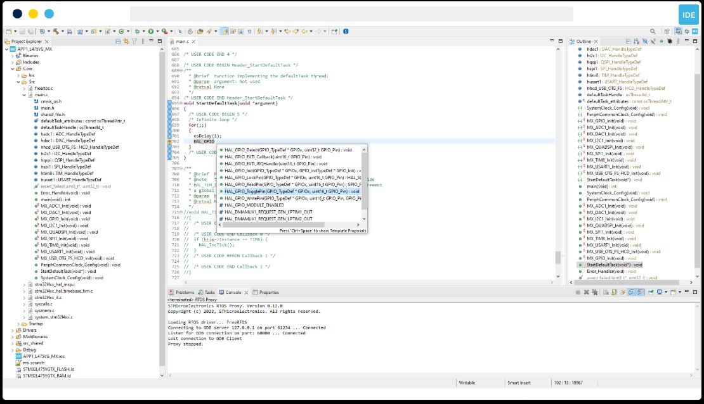
STM32CubeIDE for VS Code
- พัฒนาและแนะนำโดย STMicro เอง
- Extension ของ VS Code
- export เป็น CMake project จาก STM32CubeMX
2. STM32CubeMX/STM32CubeMX2
- เครื่องมือสำหรับสร้างโค้ดจัดการขาสัญญาณและเพอริเฟอรัลบนชิป
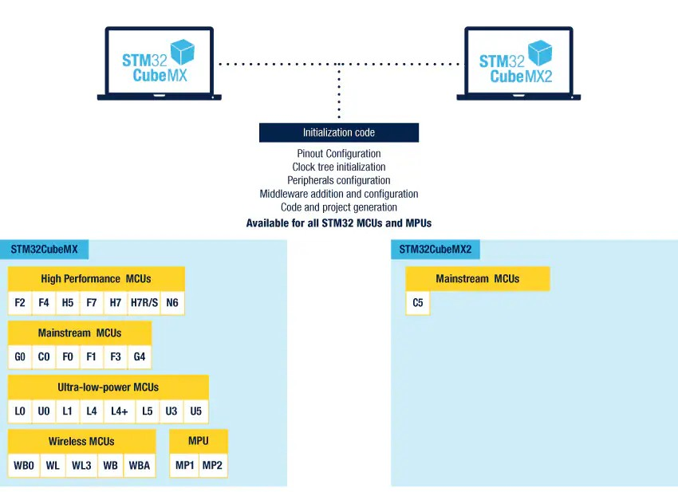
2. STM32CubeMX2 configuration
Pin configuration
- Port (A/B/C/…) - pin (0-15)
- Function: GPIO, AFIO, analog
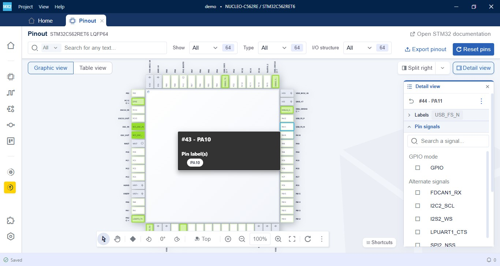
Clock tree setting
- Clock source: HSI, HSE, PLL, …
- Prescaler settings
- Clock frequency: AHBx, APBx, …
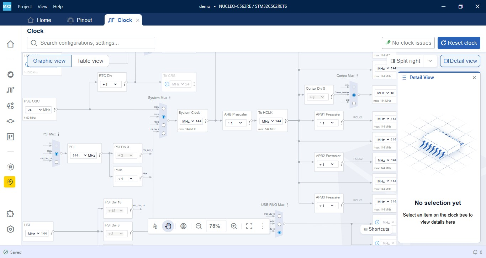
2. STM32CubeMX2 configuration
Peripheral configuration
- Core: Cortex (SysTick, DEBUG, …)
- System: RCC, DMA, WDG, …
- Group: connectivity, timer, analog, …
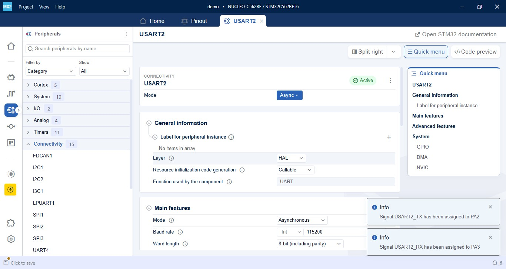
Middleware configuration
- RTOS: FreeRTOS
- Future: USB, protocol, AI, …
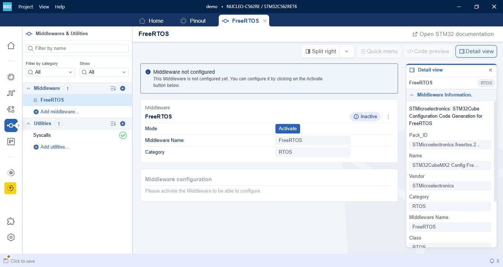
2. Practice: STM32CubeMX2
- สร้าง project สำหรับบอร์ด NUCLEO-C562RE ด้วย STM32CubeMX2
- configure ขา PA5 เป็น OUTPUT
- สร้าง project แบบ CMake - GCC
- นำเข้า project ด้วย STM32CubeIDE extension ใน VS Code
- เลือก Setup STM32CubeIDE project เป็น GCC
2. STM32CubeMX1 → CMake project2
โครงสร้างของ CubeMX
/Core/Src:main.c: โค้ดหลักstm32XYxx_it.c: โค้ด ISRstm32XYxx_hal_msp.c: โค้ดกำหนดขาสัญญาณsystem_stm32XYxx.c: โค้ดส่วน boot
/Core/Inc: กลุ่มไฟล์ header/Drivers: ไลบรารี CMSIS และ Cube HAL/build: ไฟล์ที่เกิดจากการ build
โครงสร้างของ CubeMX2
main.cและmain.h: ส่วนโค้ดหลัก/generated/hal: กลุ่มโค้ดจากการตั้งค่าฮาร์ดแวร์/user_modifiable: กลุ่มโค้ดส่วน boot/stm32c5xx_drivers: ไลบรารี HAL/build: ไฟล์ที่เกิดจากการ build
2. Practice: LED blink
- เขียนโค้ด build และ run
เพิ่มโค้ดใน loop ของ main.c
จาก Run and Debug เลือก STM32 Launch STLink GDB Server
หลังจาก GDB เชื่อมต่อ กดปุ่ม Continue
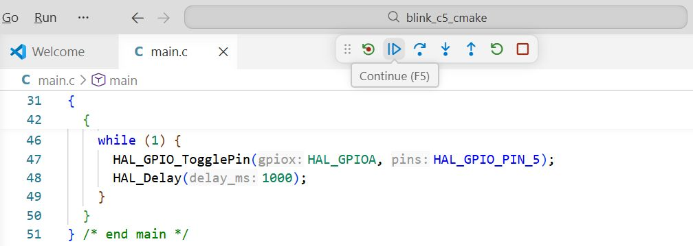
2. STM32CubeIDE for VS Code
CMake
- เตรียม config ของ SDK
- กำหนด env การ build
Ninja
- จัดการขั้นตอน build
gcc/clangd
- ชุดเครื่องมือสำหรับ compile/link
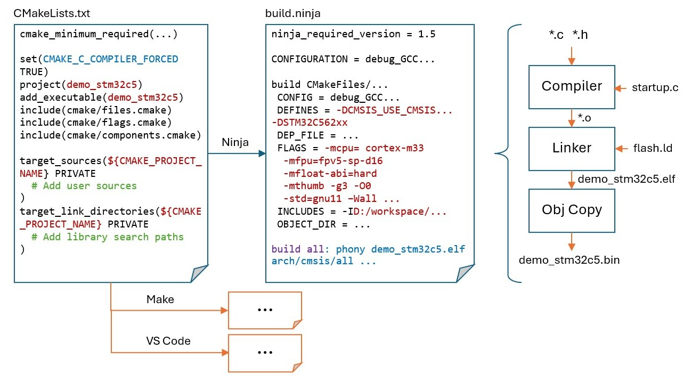
2. CMakeLists.txt
Root settings
cmake_minimum_required(VERSION 3.20)
include(cmake/target.cmake)
include(cmake/${TOOLCHAIN_FILE})
project(blink_c5)
add_executable(blink_c5)
include(cmake/files.cmake)
include(cmake/flags.cmake)
include(cmake/components.cmake)
target_sources(${CMAKE_PROJECT_NAME} PRIVATE
# Add additional source files here
)
target_include_directories(${CMAKE_PROJECT_NAME} PUBLIC
# Add additional include directories here
)
target_compile_definitions(${CMAKE_PROJECT_NAME} PUBLIC
# Add additional defined symbols here
)
target_compile_options(${CMAKE_PROJECT_NAME} PUBLIC
# Add additional compiler flags here
)
target_link_options(${CMAKE_PROJECT_NAME} PUBLIC
# Add additional linker flags here
)
target_link_directories(${CMAKE_PROJECT_NAME} PUBLIC
# Add additional linker search directories here
)
target_link_libraries(${CMAKE_PROJECT_NAME} PUBLIC
# Add additional linker libraries here
)/cmake/files.cmake setting
/cmake/GCC.14.3.1.cmake setting
if(CPU STREQUAL "Cortex-M33")
if(FPU STREQUAL "SP_FPU")
if(DSP STREQUAL "DSP")
set(CPU_FLAGS -mcpu=cortex-m33 -mfpu=fpv5-sp-d16 -mfloat-abi=hard)
else()
set(CPU_FLAGS -mcpu=cortex-m33+nodsp -mfpu=fpv5-sp-d16 -mfloat-abi=hard)
endif()
endif()
endif()
set(CPU_FLAGS ${CPU_FLAGS} -mthumb)
set(TOOLCHAIN_PREFIX arm-none-eabi-)
set(FLAGS "-fdata-sections -ffunction-sections -Wl,--gc-sections -Wno-comment")
set(CMAKE_C_COMPILER ${TOOLCHAIN_PREFIX}gcc)
set(CMAKE_EXECUTABLE_SUFFIX_C ".elf")2. STM32Cube packages
- HAL/LL API: STM32CubeF0/F1/…/F7, STM32CubeL0/../L5, …, STM32CubeH5/H7
- HAL2/LL API: STM32CubeC5
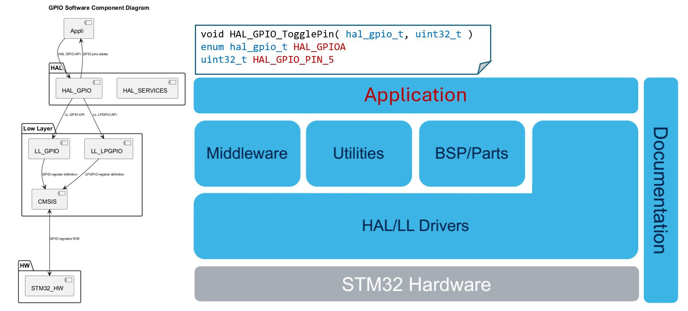
2. Practice: Hello, world
- เปิดใช้งาน USART2 สำหรับบอร์ด NUCLEO-C562RE ด้วย STM32CubeMX2
จากขา PA2/PA3 หรือ Connectivity เปิดใช้งาน USART2 โหมด Async
ตั้งค่า 115200, 8, n, 1
เพิ่มโค้ดใน loop ของ main.c1
- เลือก Run and Debug แล้วกดปุ่ม Continue
- ติดตั้ง Serial Monitor extension
- เลือก Teminal > New Terminal
- เลือกแท็บ Serial Monitor จากนั้นเลือก COM port (STMicro STLink VCP)
- กดปุ่ม Start Monitoring
2. On-chip debugger
การตรวจสอบสถานะของหน่วยประมวลผล1
| Features | Operations |
|---|---|
| HW breakpoint | เข้าโหมด debug เมื่อประมวลผลคำสั่งที่ ADDR |
| SW breakpoint | เข้าโหมด debug เมื่อประมวลผลคำสั่ง BKPT |
| HW watchpoint | เข้าโหมด debug เมื่อเข้าถึงข้อมูลที่ ADDR |
| Single-step | ประมวลผล 1 instruction |
| Memory-access | เข้าถึงหน่วยความจำ (register/flash/RAM/peripheral) |
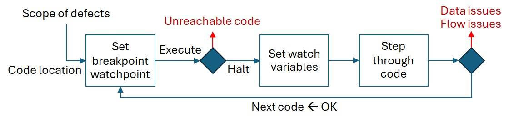
2. ST-Link GDB server ⇆ ARM Cortex-M
โปรแกรมสำหรับดีบั๊กการทำงานของเฟิร์มแวร์ผ่านกลไกของ GDB1 ที่เข้าถึงและควบคุมส่วน ARM Cortex-M ผ่าน ST-Link
- ติดตั้งเฟิร์มแวร์ผ่าน STM32CubeProgrammer
- ตั้งตำแหน่งของ breakpoint, watchpoint, tracepoint
- ควบคุมการทำงานของหน่วยประมวลผล
- อ่านสถานะภายในหน่วยความจำ
| Commands | Operations |
|---|---|
>help |
แสดงรายการของคำสั่ง |
>continue |
เริ่มประมวลผลต่อ |
>break ? |
ตั้ง breakpoint ในโค้ด (บรรทัด, ชื่อฟังก์ชัน, *address) |
>watch ? |
ตั้ง watchpoint ของตัวแปร |
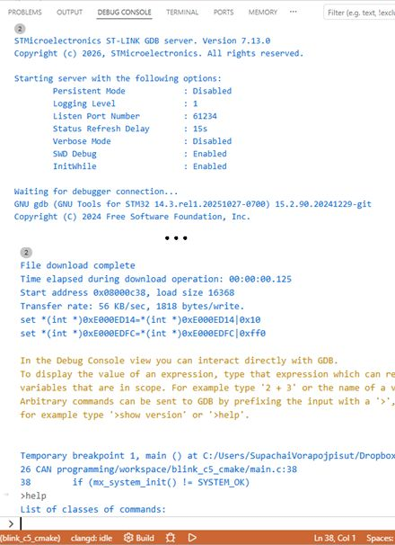
2. Practice: breakpoint - watch - step
Q&A
- เราจะเตรียม project อย่างไร หากไม่ใช้ STM32CubeMX2 ?
- หากไม่มี
HAL_Delay(1000)ในโค้ด LED blink จะเห็นอะไร ? - ทำไมกำหนด size เป็น 6 ในคำสั่ง
HAL_UART_Transmit(..., "Hello\n", 6, 100)?
03 Firmware development
- Hardware vs Software perspectives
- Embedded programming:
- Bare-metal coding
- HAL-based coding
- Polling - Interrupt - DMA
3. ARM Cortex-M33
Processor architecture
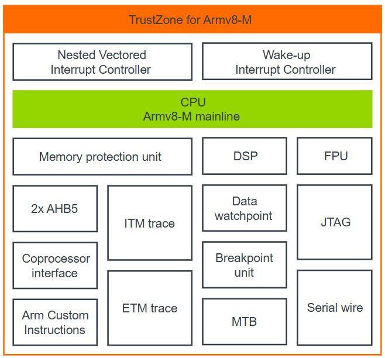
ARM Instructions1
- โค้ด
u8++;2
- โค้ด
u32 = f32a / f32b
- โค้ด
f32 = u32a / u32b
3. Memory map
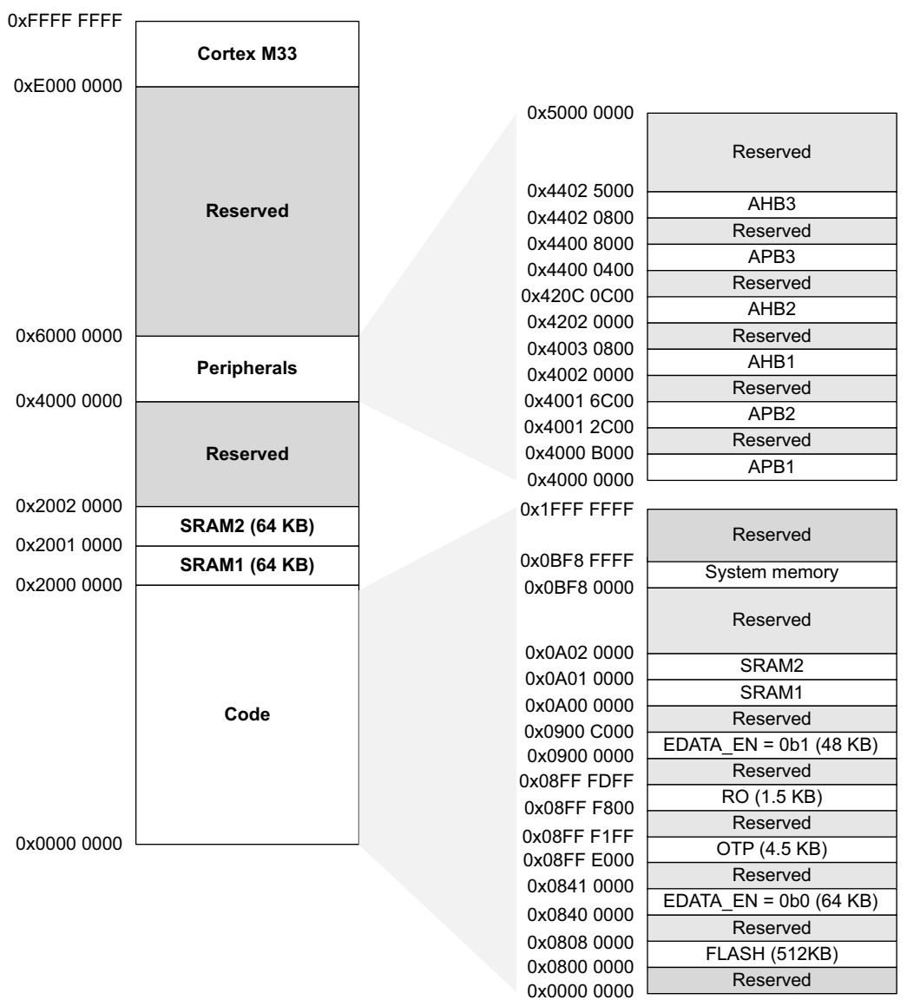
การกำหนดหน่วยความจำ
- นิยามใน linker script
MEMORY {
ROM (rx) : org = 0x8000000, len = 0x80000
RAM (xrw) : org = 0x20000000, len = 0x20000
}
SECTIONS {
.vectors : { . = ALIGN(8); } > ROM
.text : { . = ALIGN(8); } > ROM
.rodata : { . = ALIGN(8); } > ROM
...
.data : { . = ALIGN(8); } > RAM AT> ROM
.bss : { . = ALIGN(8); } > RAM
.heap (NOLOAD) : { . = ALIGN(8); } > RAM
.stack (NOLOAD) : { . = ALIGN(8); } > RAM
}- นิยามใน stm32c562xx.h
3. Memory-mapped I/O
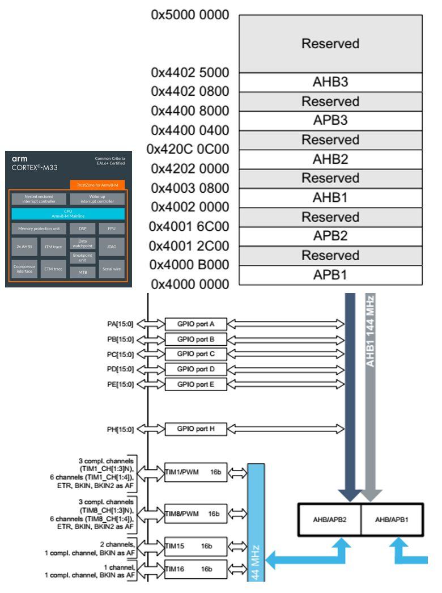
มุมมองซอฟต์แวร์
- บัส
- GPIO
- เพอริเฟอรัล
- การประกาศโครงสร้าง
3. Special Function Register
- การประกาศโครงสร้าง
- การอ้างอิงกลุ่มรีจิสเตอร์
typedef struct {
__IOM uint32_t MODER; // GPIO port mode register, offset: 0x00
__IOM uint32_t OTYPER; // GPIO port output type register, offset: 0x04
__IOM uint32_t OSPEEDR; // GPIO port output speed register, offset: 0x08
__IOM uint32_t PUPDR; // GPIO port pull-up/pull-down register, offset: 0x0C
__IM uint32_t IDR; // GPIO port input data register, offset: 0x10
__IOM uint32_t ODR; // GPIO port output data register, offset: 0x14
__OM uint32_t BSRR; // GPIO port bit set/reset register, offset: 0x18
__IOM uint32_t LCKR; // GPIO port configuration lock register, offset: 0x1C
__IOM uint32_t AFR[2]; // GPIO alternate function registers, offset: 0x20-0x24
__OM uint32_t BRR; // GPIO port bit Reset register, offset: 0x28
} GPIO_TypeDef;3. Practice: hardware access with GDB
3. STM32 GPIO configuration
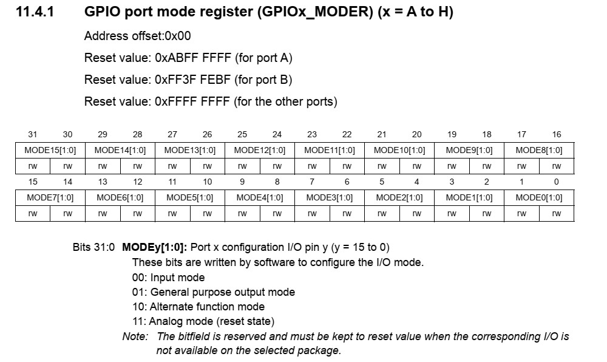
3. STM32 5V-tolerant I/O
- Control registers:
GPIOx_MODER,GPIOx_OTYPER,GPIOx_PUPDR,GPIOx_OSPEEDR - Data registers:
GPIOx_ODR,GPIOx_IDR,GPIOx_BSRR - Status registers: none
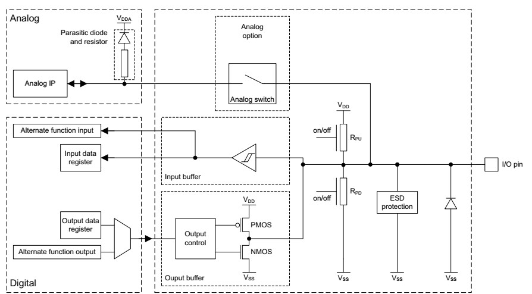
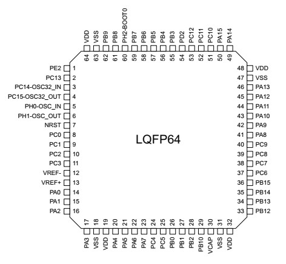
3. STM32 alternate function I/O
- Selection by
GPIOx_MODER+GPIOx_AFRL/Hregisters
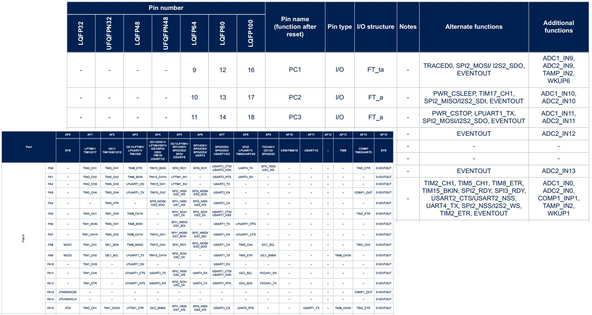
3. Embedded C programming
- ตัวกระทำระดับบิต
| Operation | C code | คำอธิบาย |
|---|---|---|
| Bit mask | (1 << 3) | (1 << 5) |
สร้าง bit 3 และ 5 เป็น 1 โดย bit อื่นเป็น 0 |
| Set bit | REG |= (1 << 5) |
bit 5 ของ REG เป็น 1 โดย bit อื่นคงเดิม |
| Clear bit | REG &= ~(1 << 5) |
bit 5 ของ REG เป็น 0 โดย bit อื่นคงเดิม |
| Toggle bit | REG ^= (1 << 5) |
bit 5 ของ REG สลับสถานะ (1 → 0 หรือ 0 → 1) โดย bit อื่นคงเดิม |
| Test bit | if ( REG & (1 << 5) ) |
หาก bit 5 ของ REG เป็น 1 ผลคือ True หากเป็น 0 ผลคือ False |
| Extract bits | BYTE = (REG >> 8) & 0xFF |
แยก bit 8-15 จาก REG |
3. Practice: bare-metal coding
- ตั้งค่า RCC เพื่อเปิดใช้งานพอร์ท A และ C
- ตั้งค่า GPIOA เพื่อกำหนดขา PA5 เป็น OUTPUT
- ตั้งค่า GPIOC เพื่อกำหนดขา PC13 เป็น INPUT
- ทดสอบขา PC13 เพื่อควบคุมขา PA5
3. STM32 USART
- Control registers:
USARTx_CR1,USARTx_CR2,USARTx_CR3,USARTx_BRR,USARTx_PRESC - Data registers:
USARTx_RDR,USARTx_TDR - Status registers:
USARTx_ISRR - Interrupt registers:
USARTx_ICR←USARTx_CR1
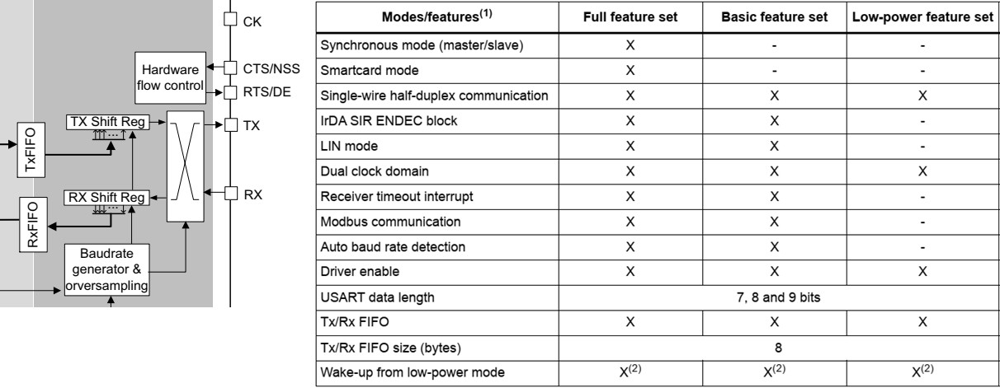
3. STM32Cube API
HAL API
- การเปิดใช้งานขาสัญญาณ
- การตั้งค่าเพอริเฟอรัล
- การใช้งานเพอริเฟอรัล
- การเตรียม callback สำหรับ IRQ
HAL2 API
- การเปิดใช้งานขาสัญญาณ
- การตั้งค่าเพอริเฟอรัล
- การใช้งานเพอริเฟอรัล
- การเตรียม callback สำหรับ IRQ
3. HAL-based API
การเข้าถึงฮาร์ดแวร์แบบ polling
การเข้าถึงฮาร์ดแวร์ผ่าน interrupt
hal_status_t HAL_USART_Transmit_IT(hal_usart_handle_t *husart, ...) {
return USART_Start_Transmit_IT(husart, ...);
}
hal_status_t UART_Start_Transmit_IT(hal_uart_handle_t *huart, ...) {
huart->tx_xfer_size = size;
huart->tx_xfer_count = size;
huart->p_tx_buff = p_data;
LL_USART_EnableIT_TXE_TXFNF(p_uartx);
}
void HAL_UART_IRQHandler(hal_uart_handle_t *huart) {
if (((isr_flags & LL_USART_ISR_TXE_TXFNF) != 0U) ...
if (((isr_flags & LL_USART_ISR_TC) != 0U) ...
}3. STM32 UART interrupt
Flow: enable INT source → unmask NVIC → IRQ → NVIC vector table → interrupt handler → clear IRQ flag
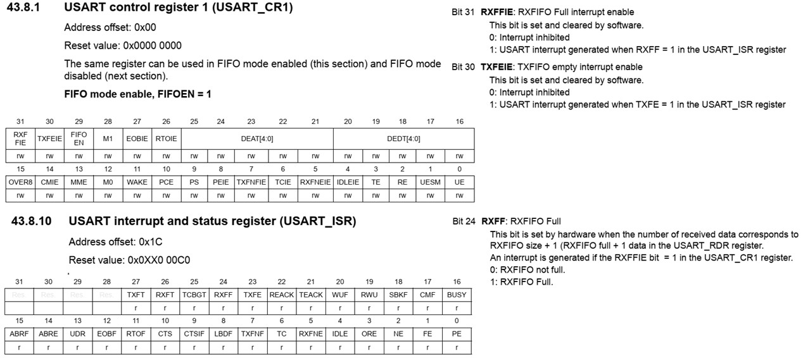
3. Practice: HAL-based coding
- ตั้งการทำงานของ USART2 สำหรับขา PA2/PA3 ใน STM32CubeMX2
- สร้าง CMake project
การรายงานแบบ polling
- เขียนโค้ดส่งข้อมูล + pin toggling1
การรายงานผ่าน NVIC
- เขียนโค้ดส่งข้อมูล + pin toggling
- เขียนโค้ด pin toggling
- ใช้ออสซิลโลสโคปร่วมกับ TRIGGER เพื่อตรวจสอบความกว้างของพัลส์
3. Firmware behaviour
UARTx_TDR (Tx data register) มีขนาด 1 ไบต์: การส่งข้อความ “hello” ทำอย่างไร
Polling: HAL_UART_Transmit()
- ย้ายข้อมูล 1 ไบต์เข้า TDR → วนรอบเช็คแฟลก
TXE - ไม่สามารถประมวลผลโค้ดส่วนอื่น
- ต้องกำหนดค่า timeout
Interrupt: HAL_UART_Transmit_IT()
- ตั้ง UART interrupt flag
TXEIEในUSARTx_CR1 - ย้ายข้อมูล 1 ไบต์เข้า TDR → ประมวลผลโค้ดต่อไป
- เมื่อเกิดการร้องขอการขัดจังหวะ1 เนื่องจากแฟลก
TXE→ ย้ายข้อมูล 1 ไบต์ถัดมา
DMA: HAL_UART_Transmit_DMA()
- ตั้งการทำงานของ DMA: ตำแหน่งหน่วยความจำต้นทาง + ขนาดข้อมูล และตำแหน่งของ
UARTx_TDR - DMA จะย้ายข้อมูลเมื่อแฟลก
TXEมีค่าเป็น 1 - ไม่มีการขัดจังหวะ ยกเว้นกำหนด DMA IRQ (โอนย้ายข้อมูลครบแล้ว)
3. Practice: DMA programming
- ตั้งการทำงานของ USART2 สำหรับขา PA2/PA3 ใน STM32CubeMX2
- ตั้งค่า DMA เพื่อส่งผ่านข้อมูลจากหน่วยความจำ (C array) ไป USART2
| Setting | Parameter | Setting | Parameter |
|---|---|---|---|
| Mode | direct transfer | Direction | memory to peripheral |
| Source addr | increased | Dest addr | fixed |
| Src/dest data size | byte |
- สร้าง CMake project
- เขียนโค้ดส่งข้อมูล + pin toggling
- เขียนโค้ด pin toggling
3. Embedded programming issues
ปัญหาจาก Interrupt Request
- ขัดจังหวะระหว่างอ่าน/เขียนข้อมูล → race condition1 หรือ read-modify-write2
- วิธีป้องกัน → สร้าง critical section โดยปิดการขัดจังหวะ
Q&A
- ทำไม elapsed time ของการส่งข้อมูลทาง UART แบบ polling และ interrupt จึงใช้เวลาเท่ากันโดยประมาณ ?
- ความเสี่ยงของโค้ดส่งข้อมูลขนาดใหญ่ผ่าน DMA โดยไม่ตรวจสอบสถานะ transfer completed คืออะไร ?
- หากเกิด interrupt request พร้อมกัน (เช่น UART + Timer) หน่วยประมวลผลจะเลือกประมวลผล IRQ ไหน ?
4. USB2ADC workshop
- Problem statement
- Firmware requirements → design
4. STM32C5 analog peripherals
Analog-to-Digital Converter (ADC)
- แปลงค่าแรงดันไฟฟ้า 0 ~ VREF+ เป็นค่าดิจิทัล 0 ~ (2bit-1)
- 12-bit SAR ADC1/2/3, 14 multiplexed channels
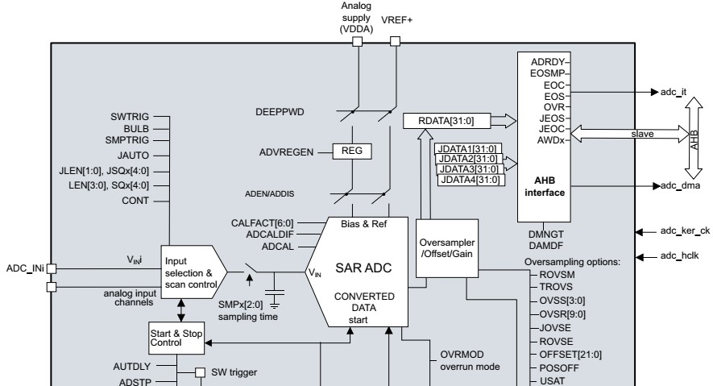
Digital-to-Analog Converter (DAC)
- แปลงค่าดิจิทัล 0 ~ (2bit-1) เป็น ค่าแรงดันไฟฟ้า 0 ~ VDDA
- 12-bit DAC, buffered/non-buffered
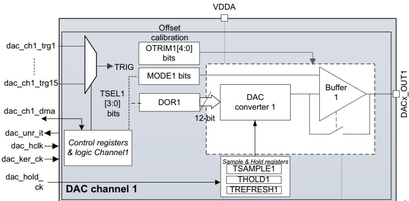
4. ADC loopback
- ADC features: regular/injected group, single/cont./discont. conversion, SW/HW triggers, analog watchdogs
- DAC mode: 12-bit DAC, single/waveform output, SW/HW triggers
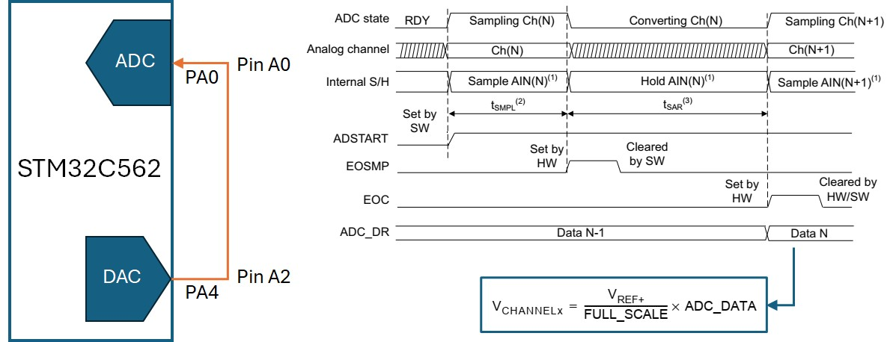
4. Practice: DAC to ADC
- เตรียม project ตัวอย่าง ex04_ADC_loopback
- ตรวจสอบการทำงาน main loop ด้วย breakpoint, step และ watch
- ตัวเลขที่เปลี่ยนแปลงของ
dac_valและadc_val
- ตัวเลขที่เปลี่ยนแปลงของ
- เสียบสายเชื่อมขา A0 และ A2
- ยืนยันค่าของแรงดันไฟฟ้าด้วย Serial Monitor และ ออสซิลโลสโคป
- ปรับแก้โค้ดให้รายงานเมื่อสถานะแรงดันไฟฟ้าเกิน 2 โวลต์
- สถานะ LED และการรายงานทาง USART2
- ยืนยันเงื่อนไขการตรวจสอบด้วย breakpoint
4. Problem statement
เฟิร์มแวร์ USB2ADC สำหรับบอร์ด NUCLEO-C562RE เป็นระบบบันทึกค่าแรงดันไฟฟ้าหลายช่องสัญญาณ โดยระบบคำสั่งตามมาตรฐาน SCPI standard
| คำสั่ง | คำอธิบาย |
|---|---|
*IDN? |
สอบถามชื่อและเวอร์ชันของอุปกรณ์ |
*RST |
รีเซ็ตการตั้งค่าเฟิร์มแวร์เป็นค่าเริ่มต้น |
:MEASure:VOLTage? |
อ่านค่าแรงดันไฟฟ้าทุกช่อง (A0-A3) แบบครั้งเดียว |
:MEASure:VOLTage:CH? |
อ่านค่าแรงดันเฉพาะช่องที่ระบุ |
:CONFigure:RATE |
ตั้งค่าความถี่ในการ Sampling (Hz) |
:CONFigure:RATE? |
สอบถามความถี่การ Sampling ปัจจุบัน |
:FORMat:DATA |
เลือกรูปแบบสตริงที่ใช้ส่งข้อมูล |
:INITiate:CONTinuous |
เปิด/ปิด โหมดส่งข้อมูลต่อเนื่อง (Streaming) |
:ABORt |
หยุดการส่งข้อมูล Streaming ทันที |
4. Firmware design
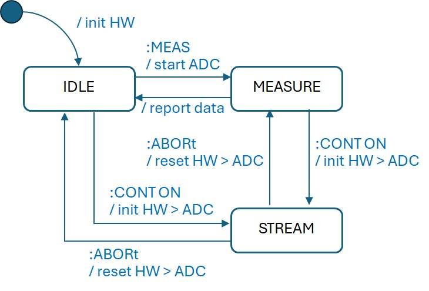
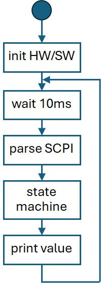
4. Firmware architecture
| Files | Responsibility | Key Functions |
|---|---|---|
main.c |
ควบคุม Main Loop และการเปลี่ยนผ่านสถานะ (State Transition) | main() |
scpi.c/h |
ตีความคำสั่งจากพอร์ตซีเรียลและจัดการ Command Event | SCPI_ParseChar(), SCPI_Execute() |
adc_service.c/h |
ควบคุมการวัดค่า ADC, การแปลงหน่วย (Scaling) และการจัดรูปแบบข้อมูล | ADC_Start_Scan(), ADC_Format_Payload() |
app_config.h |
รวบรวมค่ากำหนดคงที่ (Constants) และ Macro ต่างๆ | #define MAX_BUF_SIZE 64 |
4. Practice: project development
Problem scope
| Module | Responsibility | Status |
|---|---|---|
| SCPI Parser | รับอักขระและตีความคำสั่ง (Low-level) | 🟢 Given |
| SCPI Cmd Handler | ควบคุมลำดับการเปลี่ยนสถานะของระบบ | 🔵 Task |
| ADC Service | อ่านค่า Hardware ADC และแปลงค่า | 🔵 Task |
Unit testing
| ID | Task | Expected Output | System Impact (ถ้าไม่ผ่าน) |
|---|---|---|---|
| UT-02 | :MEAS:VOLT? 0 |
แรงดันที่ขา A0 | Data not available: ระบบไม่สามารถตรวจสอบเซ็นเซอร์ได้ |
| UT-03 | :FORM:DATA ASCII |
เปลี่ยน Format ได้ | Integration Fail: แอปพลิเคชัน (LabVIEW) จะไม่สามารถ Parse ข้อมูลได้ |
4. SCPI protocol
Standard Commands for Programmable Instrumentation (SCPI) เป็นโปรโตคอลสำหรับคอมพิวเตอร์เชื่อมต่อผ่าน UART/USB/GPIB/LXI กับเครื่องมือวัด
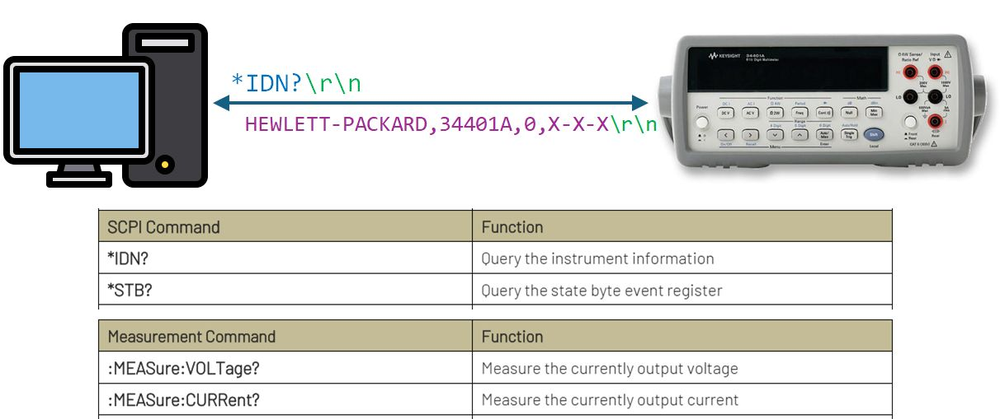
4. Practice: SCPI
- เตรียม project ตัวอย่าง ex04_SCPI_demo
- ยืนยันการได้รับคำสั่งผ่าน USART2 โดยใช้ breakpoint ใน
HAL_UART_RxCpltCallback()- ส่งตัวอักษรด้วย Serial Monitor โดยเลือก Line ending เป็น None
- ตั้ง breakpoint ในส่วนตรวจจับ EOL ใน
SCPI_Parse_Char()- ปรับ Line encoding เป็น CRLF และใช้ watch ตรวจสอบสถานะ
scpi_cmd
- ปรับ Line encoding เป็น CRLF และใช้ watch ตรวจสอบสถานะ
| Test case | Input | Expect cmd_buf |
Expect param_buf |
Expect is_query |
|---|---|---|---|---|
| normal | *IDN? |
*IDN? |
true | |
| normal | :MEAS:VOLT? |
:MEAS:VOLT? |
true | |
| normal | :MEAS:VOLT? 2 |
:MEAS:VOLT? |
2 |
true |
| abnormal | 12345:ABC 6 |
:ABC |
6 |
false |
| abnormal | :*IDN? |
:*IDN? |
true |

คอร์สอบรมนี้ได้รับการสนับสนุนงบประมาณจาก สป.อว.